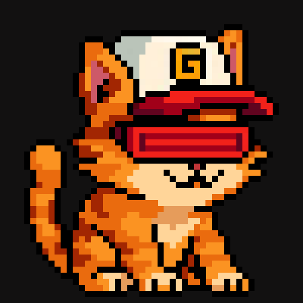
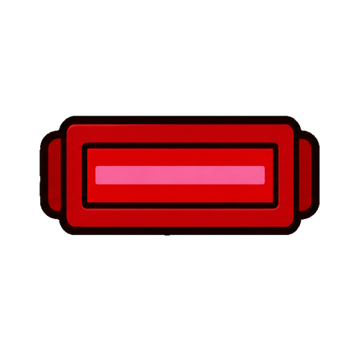

01
Live
Highway Havoc!
The main Cyclops arcade game: a high-energy browser run made for quick sessions.

Cyclops one eye, one visionGame-native IP on Abstract

Cyclops is an established gamer-cat brand built for playable moments, crossover drops, score challenges, and a community of Abstract gamers and traders.
Cyclops Arcade
Cyclops is building a playable identity across Abstract: arcade drops, score runs, collabs, and assets that other games can plug into.
The main Cyclops arcade game: a high-energy browser run made for quick sessions.
Solitaire with custom Cyclops suits, sounds, music, and a leaderboard.
Move Cyclops, catch icons, and dodge bombs. Fill the visor gauge and use it to clear the screen!
A Gigaverse racing event where players watched Cyclops race their Giglings and earned raffle tickets when their wallet beat him.
A deeper strategy game for Cyclops items, factions, rival characters, community lore, and longer-form competitive play.
Cyclops and his friends beat up bad guys, and maybe each other!
The character
Cyclops is built to move. The mascot, visor, cap, paw, and one-eyed attitude can show up as a playable hero, collectible item, sticker, emote, card suit, or partner-game asset.
Orange cat. One eye. Red visor. Gamer posture. A clean silhouette that players can recognize fast.
Cyclops is already positioned around playable drops, score challenges, streamable clips, and community events.
The visor, cap, paw, and Abstract mark can become items, suits, badges, power-ups, and partner-game assets.

Momentum
The brand is built for repeatable moments: games people can play, scores people can chase, clips people can post, and collabs people can recognize immediately.
Keep the arcade active with browser games that are fast to open and easy to share.
Run score challenges, leaderboard pushes, tournaments, and events for gamers and traders.
Bring Cyclops assets into more games as characters, items, effects, cosmetics, and quests.
Use every playable drop and community moment to make Cyclops harder to ignore.
Join Cyclops